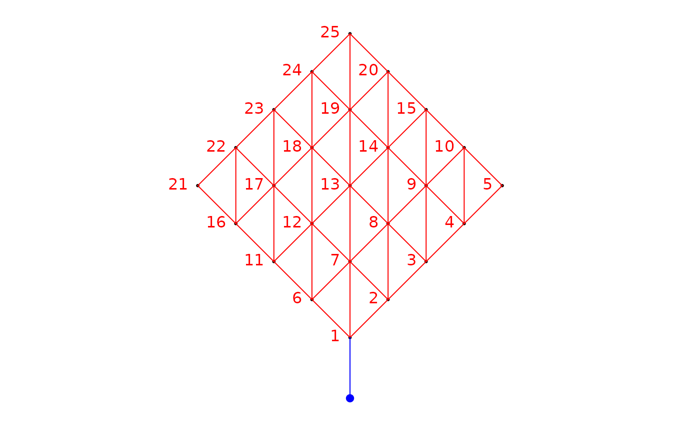
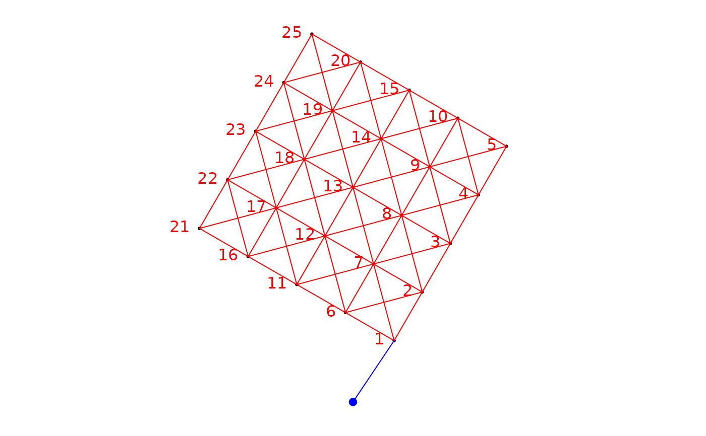
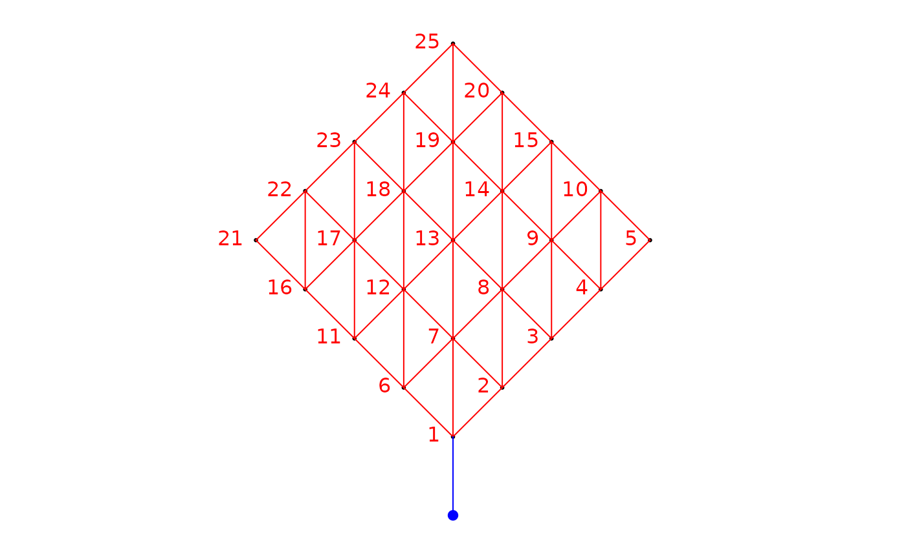
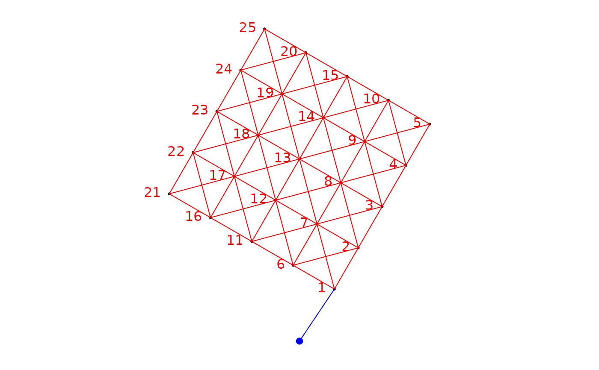

This function construct a site-by-edge binary matrix. It uses a set of sites
coordinates and a connexion diagram (object of class nb from the
spdep package). The 1s in the matrix represents the presence of a link
influencing a site, directly or indirectly, otherwise the values are 0s.
Graphically, the function is implemented such that the directional process is
considered to be going from the bottom to the top of the screen in the
graphical output of R. As such, the origin is underneath the set of points
representing the sites. Prepare the table of site coordinates accordingly.
aem.build.binary(
nb.object = NULL,
coords,
link = NULL,
unit.angle = "degrees",
rot.angle = 0,
rm.same.y = TRUE,
plot.connexions = TRUE
)Arguments
- nb.object
Object of class
nbfrom library spdep.- coords
A three columns matrix or data frame. Colums 1: identifiers of the points (needs to be numeric). Columns 2 and 3: the X and Y coordinates of the points.
- link
A two columns matrix. Each row define an edge. Column 1: The site from which the edge starts. Column 2: the site to which the edge ends. All values in
linkneed to be integers.- unit.angle
Character. The measurement units in which the angle is defined: either "degrees" (default) or "radians".
- rot.angle
Numeric. Angle of the vector describing the process influencing the sites. This argument generate a rotation of the site coordinates. The set of coordinates is rotated counterclockwise. Negative values will produce a clockwise rotation.
- rm.same.y
Logical (
TRUE,FALSE). Determines if the links perpendicular to the gradient should be removed. Default value:TRUE. If these links have already been removed this argument put toTRUEwill make the function crash. See detail for more information.- plot.connexions
Logical (
TRUE,FALSE). Determines if the sites and the associated connexion diagram should be plotted after rotation of the coordinates bygradient.angle.
Value
se.matA binary (n x k) matrix of site (n rows) by link edges (k columns).
edgesA matrix describing the link edges. It has 2 columns (from, to) and as many rows as there are edges. The edges linked to the fictitious site of origin are found at the beginning of the list.
Details
The lowest site in the gradient is the one that will connect to the fictitious site 0 to consider direction. Note that if there are multiple lowest sites, they will all be connected to the fictitious site 0 to consider direction.
The site-by-edge matrix created by this function and the list of edges
include the links associated to a fictitious site upstream of all other, see
Blanchet et al. (2008), for details. The decision regarding wether the
origin and the edges associated with it should be kept or removed is left to
the user. Removal of this site and of its associated edges can be done
manually after the construction of the site-by-edge matrix and of the list
edges. It can also be done when running the function aem.
If the connexion diagram was modified so that the links connecting sites that
are exactly perpendicular to the gradient have been removed or if there is no
sites exactly at the same level in the gradient, defining rm.same.y to
TRUE will generate an error.
If all the sites have the same y coordinates after rotation, e.g. a horizontal transect perpendicular to the defined spatial asymmetry, this analysis should not be used.
The argument plot.connexions will plot the sites (coords) in
black, after rotation, if any, and the connexion diagram (nb.object),
in red. The site labels are also plotted on the graph. To show the direction
of the spatial asymmetry considered by the function, a fictive site (in blue)
was added upstream. This fictive site is linked (blue edges) to the site(s)
that are the most upstream ones. Since this graph is generic, it might
sometimes look odd, however, the information given will remain the accurate.
References
Blanchet F.G., P. Legendre and Borcard D. (2008) Modelling directional spatial processes in ecological data. Ecological Modelling, 215, 325-336.
See also
Examples
### Create an object of class nb (spdep)
if(require("spdep", quietly = TRUE)){
nb<-cell2nb(5,5,"queen")
### Create fictitious geographical coordinates
xy <- cbind(1:25,expand.grid(1:5,1:5))
### Build a binary site-by-link matrix; remove the site which have identical Y coordinate
### (by default argument: rm.same.y = TRUE)
bin.mat <- aem.build.binary(nb,xy)
str(bin.mat)
### Build a binary site-by-link matrix using the argument link: remove the site which
### have identical Y coordinate (by default argument: rm.same.y = TRUE)
edges<-expand.grid(1,2:25)
bin.mat <- aem.build.binary(coords=xy,link=edges)
str(bin.mat)
### Build a binary site-by-link matrix, making the process affect the points at
### an angle of 45 degrees
bin.mat.45 <- aem.build.binary(nb,xy, rot.angle=45)
str(bin.mat.45)
### Build a binary site-by-link matrix, making the process affect the points at
### an angle of pi/3 radians
bin.mat.pi3 <- aem.build.binary(nb,xy,unit.angle="radians", rot.angle=pi/3)
str(bin.mat.pi3)
}
 #> List of 2
#> $ se.mat: int [1:25, 1:57] 1 0 0 0 0 1 1 0 0 0 ...
#> $ edges : num [1:57, 1:2] 0 0 0 0 0 1 1 2 2 2 ...
#> ..- attr(*, "dimnames")=List of 2
#> .. ..$ : chr [1:57] "" "" "" "" ...
#> .. ..$ : chr [1:2] "from" "to"
#> List of 2
#> $ se.mat: int [1:25, 1:25] 1 0 0 0 0 1 1 1 1 1 ...
#> $ edges : num [1:25, 1:2] 0 0 0 0 0 1 1 1 1 1 ...
#> ..- attr(*, "dimnames")=List of 2
#> .. ..$ : chr [1:25] "" "" "" "" ...
#> .. ..$ : chr [1:2] "from" "to"

#> List of 2
#> $ se.mat: int [1:25, 1:57] 1 1 1 1 1 1 1 1 1 1 ...
#> $ edges : num [1:57, 1:2] 0 1 1 1 2 2 2 3 3 3 ...
#> ..- attr(*, "dimnames")=List of 2
#> .. ..$ : chr [1:57] "" "1" "2" "3" ...
#> .. ..$ : chr [1:2] "from" "to"

#> List of 2
#> $ se.mat: int [1:25, 1:73] 1 1 1 1 1 1 1 1 1 1 ...
#> $ edges : num [1:73, 1:2] 0 1 1 1 2 6 2 2 3 7 ...
#> ..- attr(*, "dimnames")=List of 2
#> .. ..$ : chr [1:73] "" "1" "2" "3" ...
#> .. ..$ : chr [1:2] "from" "to"
#> List of 2
#> $ se.mat: int [1:25, 1:57] 1 0 0 0 0 1 1 0 0 0 ...
#> $ edges : num [1:57, 1:2] 0 0 0 0 0 1 1 2 2 2 ...
#> ..- attr(*, "dimnames")=List of 2
#> .. ..$ : chr [1:57] "" "" "" "" ...
#> .. ..$ : chr [1:2] "from" "to"
#> List of 2
#> $ se.mat: int [1:25, 1:25] 1 0 0 0 0 1 1 1 1 1 ...
#> $ edges : num [1:25, 1:2] 0 0 0 0 0 1 1 1 1 1 ...
#> ..- attr(*, "dimnames")=List of 2
#> .. ..$ : chr [1:25] "" "" "" "" ...
#> .. ..$ : chr [1:2] "from" "to"

#> List of 2
#> $ se.mat: int [1:25, 1:57] 1 1 1 1 1 1 1 1 1 1 ...
#> $ edges : num [1:57, 1:2] 0 1 1 1 2 2 2 3 3 3 ...
#> ..- attr(*, "dimnames")=List of 2
#> .. ..$ : chr [1:57] "" "1" "2" "3" ...
#> .. ..$ : chr [1:2] "from" "to"

#> List of 2
#> $ se.mat: int [1:25, 1:73] 1 1 1 1 1 1 1 1 1 1 ...
#> $ edges : num [1:73, 1:2] 0 1 1 1 2 6 2 2 3 7 ...
#> ..- attr(*, "dimnames")=List of 2
#> .. ..$ : chr [1:73] "" "1" "2" "3" ...
#> .. ..$ : chr [1:2] "from" "to"